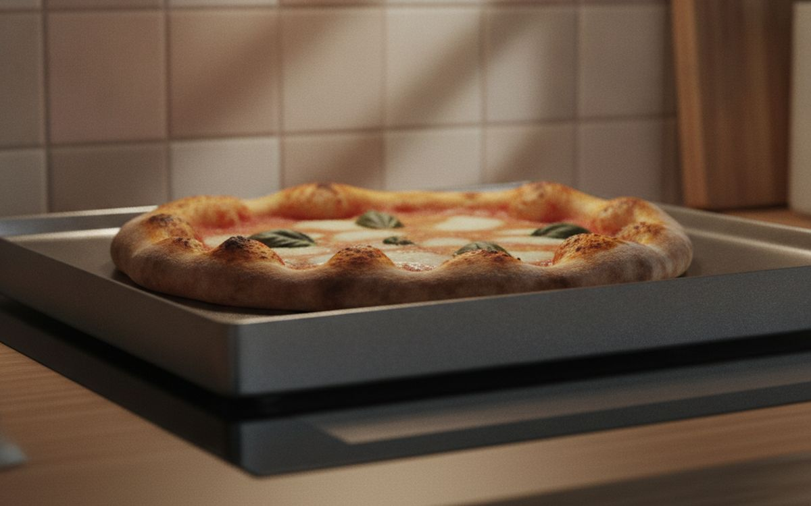
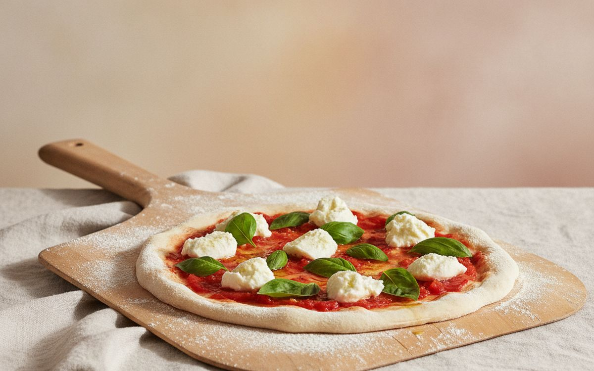
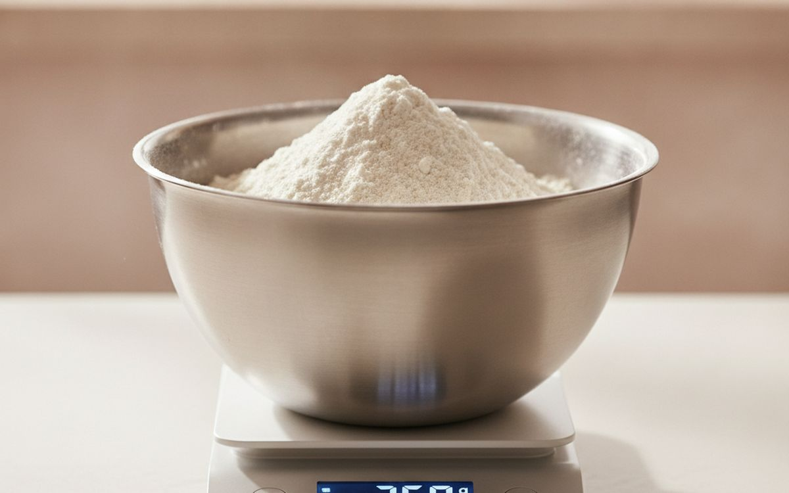
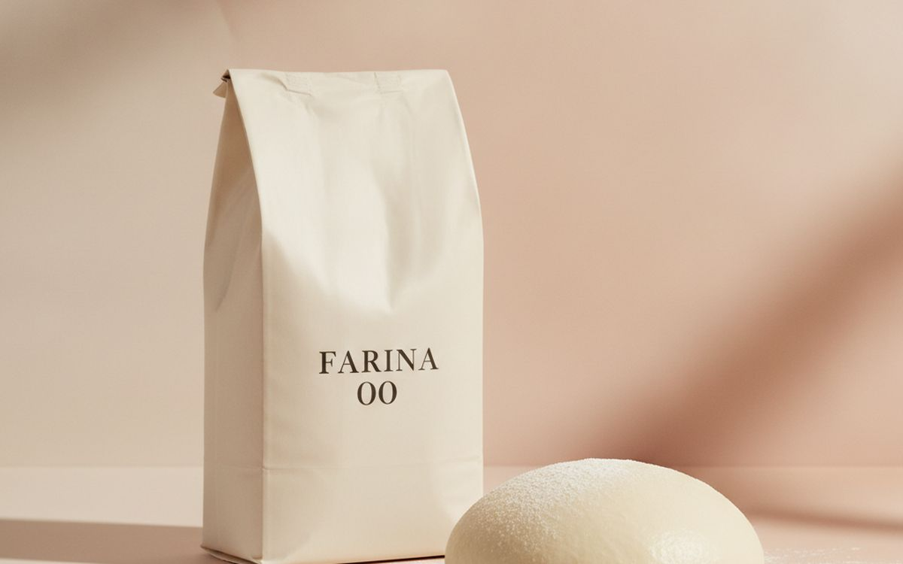
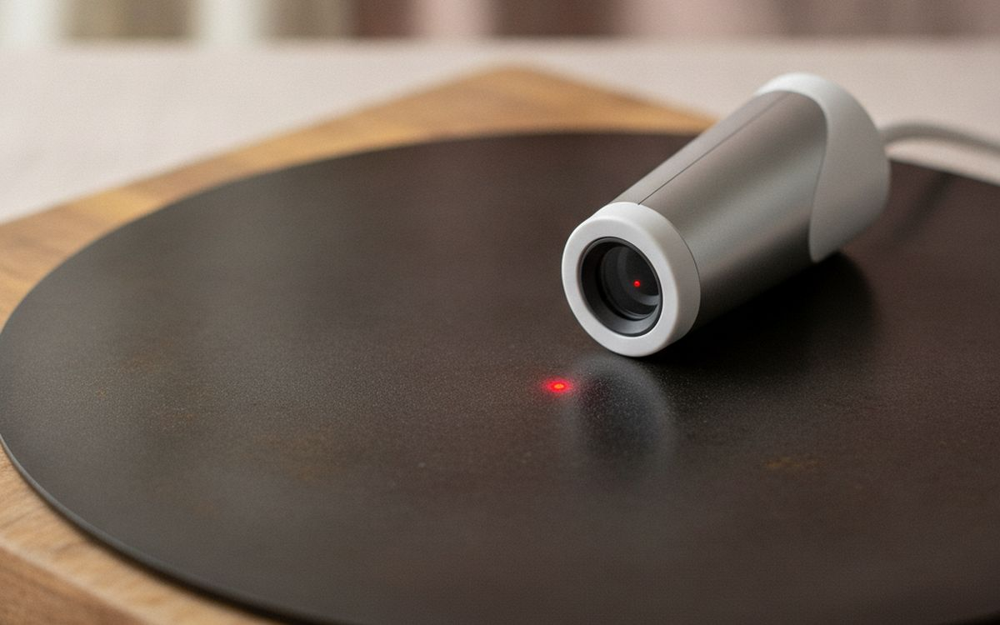
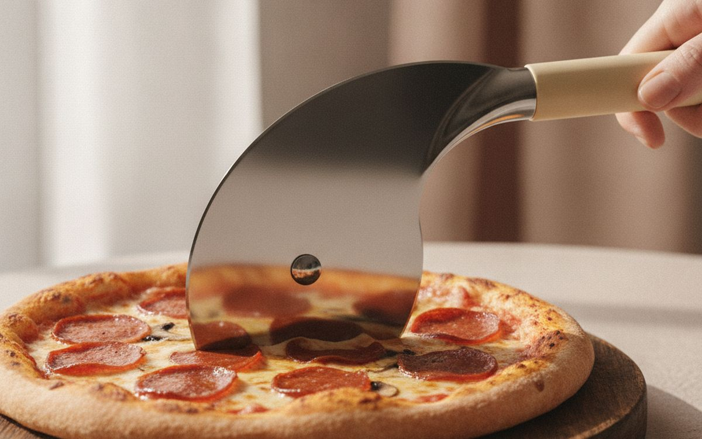
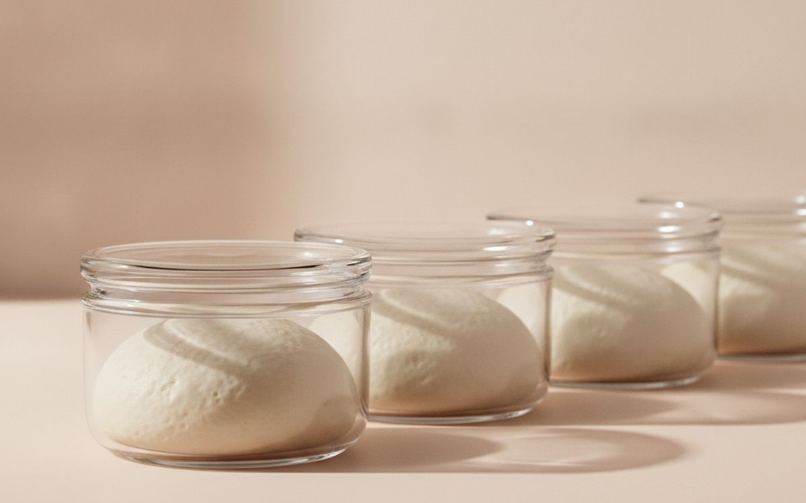
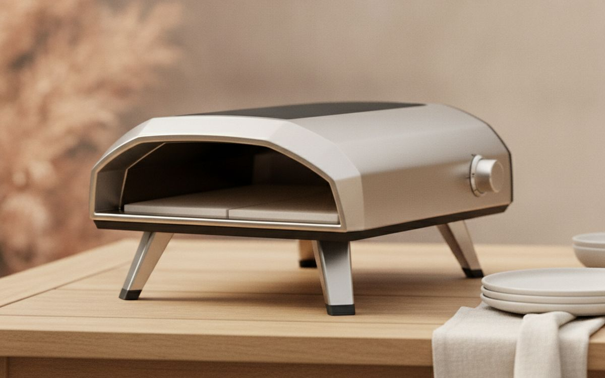
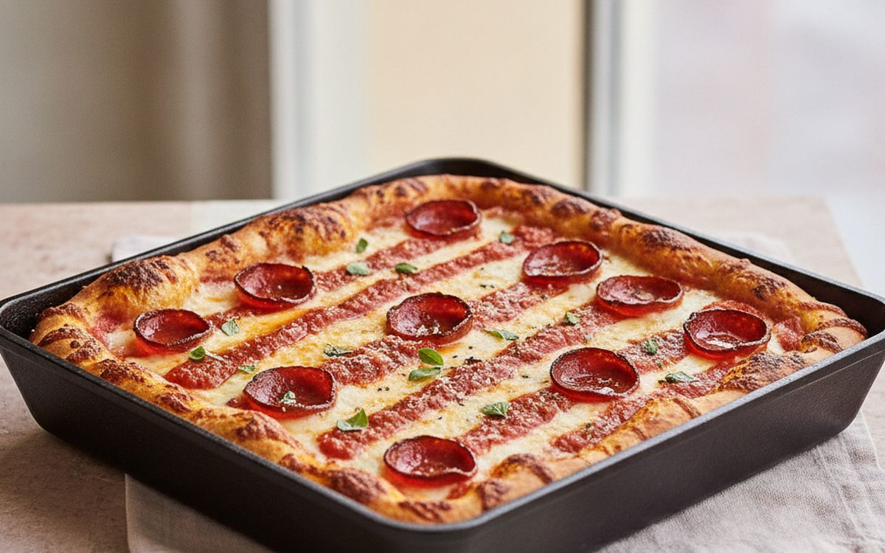
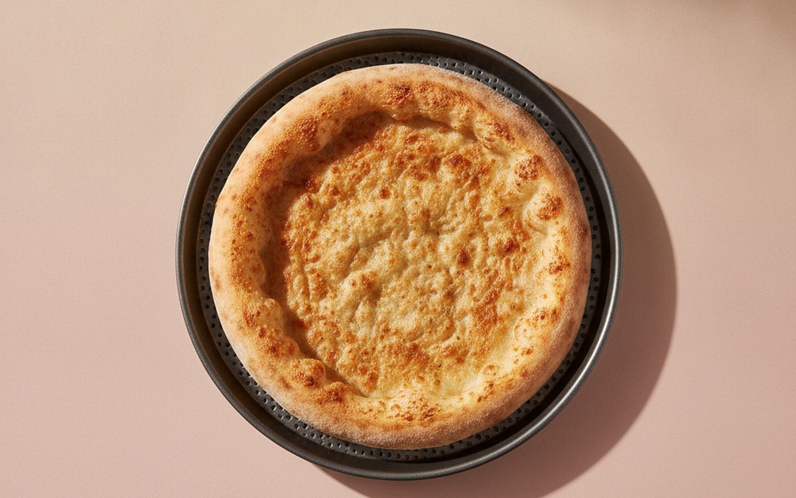

Homemade pizza usually disappoints for one reason: the oven is not hot enough. A pizzeria oven runs at 700-900°F. A home oven tops out around 500°F, and a thin baking sheet does not hold that heat, so the crust bakes pale and bready before the top is done.
This list is ordered by how much each item closes that gap. The first pick costs less than a takeaway order and transforms pizza from a normal oven. The outdoor oven sits further down because it is the biggest spend and only worth it once you are hooked.
Prices below are approximate street prices at the time of writing and move around constantly, especially during sale events. Treat them as a rough band for budgeting, not a quote. Always check the live listing before you buy.
Με λίγα λόγια
A baking steel or thick pizza stone
The upgrade that fixes the crust
Γνωστοποίηση. Οι σύνδεσμοι σε αυτή τη σελίδα είναι συνδεδεμένοι. Αν αγοράσετε μέσω κάποιου, ενδέχεται να λάβουμε προμήθεια χωρίς επιπλέον κόστος για εσάς. Δεν επηρεάζει το τι μπαίνει στη λίστα ούτε τη σειρά της.
Πώς επιλέξαμε
These picks come from published testing, pizza-making communities and long-run owner reports, cross-checked against current retail listings. We have not personally tested every item here. We favoured tools that work in an ordinary home oven first.
Με μια ματιά
Οι τιμές είναι ενδεικτικές κατά τη συγγραφή και αλλάζουν συχνά.
Οι επιλογές

01 · The upgrade that fixes the crustA baking steel or thick pizza stone
A thick steel or stone soaks up heat during preheating and dumps it into the dough when the pizza lands, which gives a crisp, blistered base in a normal oven. Steel conducts heat faster than stone, so it bakes quicker and browns better at home oven temperatures. Preheat for 45 minutes to an hour at your oven's highest setting, on the top-third rack. Steel is heavy but will not crack; stones are lighter but can break from sudden temperature changes. The case for it: crisp, browned base in a normal oven, also great for bread, and lasts forever. The trade-off is real: steel is very heavy and needs a long preheat, so weigh that against how often it would actually get used.
$40-100Ο συμβιβασμός: Steel is very heavy
Γιατί είναι εδώ
- Crisp, browned base in a normal oven
- Also great for bread
- Lasts forever
Αξίζει να ξέρετε
- Steel is very heavy
- Needs a long preheat

02 · Sliding pizza on and offA pizza peel
Transferring a floppy pizza onto a hot steel without a peel is how toppings end up on the oven floor. A wooden peel is best for launching because dough sticks less to wood; a thin metal peel is best for turning and retrieving. Dust with semolina so the pizza slides. Start with one and add the other if you get serious. The case for it: makes launching pizzas possible, semolina helps it slide, and cheap. The trade-off is real: launching takes practice and wooden peels are thick for turning, so weigh that against how often it would actually get used.
$15-35Ο συμβιβασμός: Launching takes practice
Γιατί είναι εδώ
- Makes launching pizzas possible
- Semolina helps it slide
- Cheap
Αξίζει να ξέρετε
- Launching takes practice
- Wooden peels are thick for turning

03 · Consistent doughA digital kitchen scale
Dough is chemistry, and cups of flour vary by up to 20 percent depending on how you scoop. A cheap digital scale makes every batch the same. Most good pizza recipes are written in grams and percentages for this reason. You will use it for all your baking. The case for it: consistent dough every time, follows gram-based recipes, and useful for all baking. The trade-off is real: needs batteries and get one that reads to 1g, so weigh that against how often it would actually get used. Priced around $12-25, it is easy to justify even if it only ends up getting occasional rather than daily use.
$12-25Ο συμβιβασμός: Needs batteries
Γιατί είναι εδώ
- Consistent dough every time
- Follows gram-based recipes
- Useful for all baking
Αξίζει να ξέρετε
- Needs batteries
- Get one that reads to 1g

04 · Dough that stretchesTipo 00 or bread flour
All-purpose flour makes a softer, weaker dough that tears. Italian 00 flour is milled fine for very hot ovens; bread flour has more protein and suits home ovens and New York style. If your oven only reaches 500°F, bread flour or a 00 flour made for home ovens often browns better. Try both. The case for it: stretchier, stronger dough, better texture, and cheap. The trade-off is real: classic 00 browns poorly in home ovens and store in a sealed container, so weigh that against how often it would actually get used.
$5-12 per bagΟ συμβιβασμός: Classic 00 browns poorly in home ovens
Γιατί είναι εδώ
- Stretchier, stronger dough
- Better texture
- Cheap
Αξίζει να ξέρετε
- Classic 00 browns poorly in home ovens
- Store in a sealed container

05 · Knowing the surface temperatureAn infrared thermometer
The oven dial tells you the air temperature, not the steel's. An infrared thermometer shows the actual surface temperature in a second, so you know when it is ready to launch. It is essential with outdoor pizza ovens, where the stone can be very hot at the back and cooler at the front. The case for it: shows real surface heat, essential for outdoor ovens, and useful for pans and griddles. The trade-off is real: does not read air temperature and shiny surfaces read inaccurately, so weigh that against how often it would actually get used.
$15-30Ο συμβιβασμός: Does not read air temperature
Γιατί είναι εδώ
- Shows real surface heat
- Essential for outdoor ovens
- Useful for pans and griddles
Αξίζει να ξέρετε
- Does not read air temperature
- Shiny surfaces read inaccurately

06 · Clean slicesA rocker or wheel pizza cutter
A dull wheel drags toppings off the pizza. A sharp wheel with a guard, or a long rocking blade, slices cleanly in one push. Rocker blades are faster for large pies and easier to clean. Protect your steel or peel; cut on a board. The case for it: clean slices without dragging toppings, quick, and cheap. The trade-off is real: rockers need a lot of storage length and do not cut on your steel, so weigh that against how often it would actually get used. Priced around $10-25, it is easy to justify even if it only ends up getting occasional rather than daily use.
$10-25Ο συμβιβασμός: Rockers need a lot of storage length
Γιατί είναι εδώ
- Clean slices without dragging toppings
- Quick
- Cheap
Αξίζει να ξέρετε
- Rockers need a lot of storage length
- Do not cut on your steel

07 · Easy overnight doughDough proofing containers
The best pizza dough is made a day or more ahead and rested in the fridge, which develops flavour and makes it easier to stretch. Lidded containers or a proofing box keep dough balls from drying out and sticking together. Individual round containers stack neatly in the fridge. The case for it: better flavour from slow proofing, stops dough drying out, and stackable. The trade-off is real: takes fridge space and dough still needs time out of the fridge before use, so weigh that against how often it would actually get used.
$15-30Ο συμβιβασμός: Takes fridge space
Γιατί είναι εδώ
- Better flavour from slow proofing
- Stops dough drying out
- Stackable
Αξίζει να ξέρετε
- Takes fridge space
- Dough still needs time out of the fridge before use

08 · Neapolitan-style pizzaA portable outdoor pizza oven
Portable gas or wood-pellet ovens from Ooni, Gozney and similar brands reach 850°F or more and cook a pizza in about a minute, with the leopard-spotted crust you cannot get indoors. They are the biggest spend here and need outdoor space and practice; pizzas burn in seconds if you are not paying attention. Gas models are easier than wood. The case for it: real pizzeria-level heat, one-minute pizzas, and fun for parties. The trade-off is real: pizzas burn quickly while you learn and needs outdoor space and fuel, so weigh that against how often it would actually get used.
$250-450Ο συμβιβασμός: Pizzas burn quickly while you learn
Γιατί είναι εδώ
- Real pizzeria-level heat
- One-minute pizzas
- Fun for parties
Αξίζει να ξέρετε
- Pizzas burn quickly while you learn
- Needs outdoor space and fuel

09 · Deep-dish and Detroit-styleA cast iron pan
Not all pizza is thin. Pan pizzas, Detroit-style and deep-dish bake beautifully in cast iron, with crispy, fried edges, and they suit home ovens perfectly. A 10 or 12-inch skillet you already own will do. It is the easiest way to impress with homemade pizza. The case for it: great pan and deep-dish pizza, suits home ovens perfectly, and used for everything else too. The trade-off is real: heavy and needs seasoning care, so weigh that against how often it would actually get used. Priced around $25-45, it is easy to justify even if it only ends up getting occasional rather than daily use.
$25-45Ο συμβιβασμός: Heavy
Γιατί είναι εδώ
- Great pan and deep-dish pizza
- Suits home ovens perfectly
- Used for everything else too
Αξίζει να ξέρετε
- Heavy
- Needs seasoning care

10 · Crisp base without a stoneA pizza screen or perforated pan
If a steel is not practical, a perforated pan or pizza screen lets heat reach the base and moisture escape, so it crisps better than a solid baking tray. It is cheap, light and good for reheating takeaway pizza too. The case for it: better than a flat baking tray, cheap and light, and great for reheating. The trade-off is real: not as crisp as a steel and dough can sink into screens, so weigh that against how often it would actually get used. At $10-20, it earns its place on this list without asking for a big up-front commitment either way.
$10-20Ο συμβιβασμός: Not as crisp as a steel
Γιατί είναι εδώ
- Better than a flat baking tray
- Cheap and light
- Great for reheating
Αξίζει να ξέρετε
- Not as crisp as a steel
- Dough can sink into screens
Συχνές ερωτήσεις
Can I make good pizza in a normal oven?
Yes. Preheat a baking steel at the highest setting for an hour and bake on the top-third rack.
Stone or steel?
Steel browns faster and will not crack. Stone is lighter and cheaper.
Is an outdoor pizza oven worth it?
If you make pizza often and have outdoor space, yes. Master a steel first.
What flour should I use?
Bread flour for home ovens and New York style; 00 flour for very hot outdoor ovens.
Οι προσφορές σήμερα
Δείτε τι είναι σε έκπτωση αυτή τη στιγμή.
Προσφορές →← Όλοι οι οδηγοί
Ως συνεργάτες της AliExpress, κερδίζουμε από επιλέξιμες αγορές. Οι τιμές και η διαθεσιμότητα ισχύουν κατά την ημερομηνία δημοσίευσης και ενδέχεται να αλλάξουν.